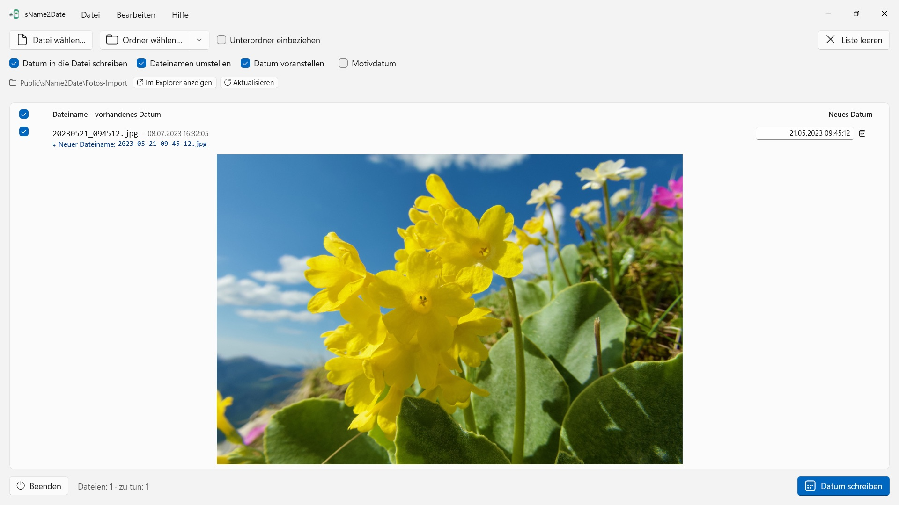
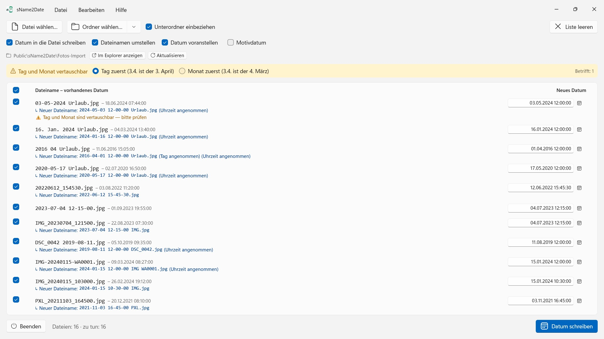

sName2Date
Liest das Datum aus dem Dateinamen – über ein Dutzend Schreibweisen, Monatsnamen in der App-Sprache und auf Englisch
Holt das Datum aus dem Dateinamen und schreibt es als Aufnahmedatum in Fotos und Filme – damit Fotoverwaltung und Explorer sie richtig einsortieren. Ganze Ordner auf einmal, alles mit Strg+Z zurückzunehmen.


Viele Fotos und Filme tragen ihr Datum im Dateinamen, ebenso Tonaufnahmen und Dokumente wie PDFs – aber nicht dort, wo Programme es suchen. Wer Bilder aus einem Chat, von einem Scanner oder aus einem alten Archiv übernimmt, bekommt Dateien wie IMG_20240115_103000.jpg, Urlaub 15.01.2024.jpg oder Rechnung 23112024.pdf, die in jeder Fotoverwaltung und im Explorer mit dem Datum von heute erscheinen.
sName2Date liest das Datum aus dem Dateinamen und schreibt es als Aufnahmedatum in die Datei. Ist noch keins vorhanden, wird es angelegt. Bei PDFs und anderen Dateien ohne Aufnahmedatum setzt die App das Erstellungs- und Änderungsdatum.
25 Sprachen: Deutsch, Englisch, Tschechisch, Kroatisch, Niederländisch, Finnisch, Französisch, Ungarisch, Italienisch, Japanisch, Koreanisch, Norwegisch (Bokmål), Persisch, Polnisch, Portugiesisch (Brasilien und Portugal), Rumänisch, Russisch, Spanisch, Schwedisch, Thai, Türkisch, Ukrainisch, Chinesisch (vereinfacht und traditionell). Die App folgt der Anzeigesprache von Windows.
ERKANNTE SCHREIBWEISEN
Datum und Uhrzeit in den gängigen Formen, unter anderem:
- 2024-01-15 10-30-00
- IMG_20240115_103000
- IMG-20240115-WA0001
- 2024-01-15 · 2024 01 15 · 2024_01_15
- 15.01.2024 · 15-01-2024 · 15.01.24 · 15012024
- 15. Jan. 2024 · 15 März 2024 · January 15 2024
- 2016 04 · 04-2016 – nur Jahr und Monat
Ausgeschriebene Monatsnamen werden in der Sprache der App und auf Englisch gelesen, in der langen wie der abgekürzten Form.
Trägt der Name nur ein Datum, wird eine Uhrzeit angenommen; welche, bestimmst du. Fehlt auch der Tag, gilt der Erste des Monats – die Zeile sagt es dazu. Stehen mehrere Datumsangaben im Namen, gewinnt die erste. Und wo Tag und Monat vertauschbar wären, entscheidest du – die Vorgabe kommt aus dem regionalen Format von Windows, betroffene Dateien werden eigens gekennzeichnet, statt still geraten.
Steht im Namen gar kein Datum, trägst du es rechts in der Zeile selbst ein. Das reicht zurück bis 1826, dem Jahr der ältesten erhaltenen Fotografie – eingescannte Aufnahmen des 19. Jahrhunderts lassen sich also genauso datieren wie die von gestern.
WAS VERÄNDERT WIRD
Geschrieben werden EXIF DateTimeOriginal und DateTimeDigitized sowie TIFF DateTime, bei Filmen und Tonaufnahmen das Erstellungsdatum im Container. Auf Wunsch auch Erstellungs- und Änderungsdatum der Datei selbst.
Die Bilddaten bleiben unangetastet: ein JPEG wird nicht neu komprimiert, ein Film nicht neu kodiert. Bei Filmen und Tonaufnahmen ändert die App in aller Regel nur wenige Bytes im Container, statt ihn neu zu schreiben – auch ein großer Film ist damit in einem Augenblick fertig. Nach jedem Schreiben liest die App das Datum zurück; die Farbe der Zeile sagt, wo es angekommen ist.
In der Datei selbst landet das Aufnahmedatum bei JPEG, TIFF und HEIC (mit der HEIF-Bilderweiterung von Microsoft), bei den Filmformaten MP4, MOV und M4V und bei den Tonformaten M4A und M4B. PNG, GIF, WebP, AVI und RAW-Fotos bekommen eine XMP-Begleitdatei daneben, die viele Fotoprogramme mitlesen – die Zeile zeigt das mit einem blauen Haken.
AUCH DATEIEN, DIE KEIN AUFNAHMEDATUM TRAGEN KÖNNEN
Eine PDF, eine Textdatei, eine Tabelle hat gar kein Feld für ein Aufnahmedatum – und kommt trotzdem in die Liste. sName2Date setzt dort Erstellungs- und Änderungsdatum der Datei, die einzige Stelle, an der die Angabe überhaupt ankommen kann; die Zeile zeigt es mit einem orangen Haken statt eines grünen. Es zählt also keine Endung: PDF, Text, Tabellen, Archive, alles.
Soll die Datei gar nicht angefasst werden, nimmst du oben im Fenster den Haken „Datum in die Datei schreiben“ heraus. Dann bringt sName2Date allein den Namen in die ISO-Schreibweise: aus Rechnung 15.03.2024.pdf wird 2024-03-15 12-00-00 Rechnung.pdf, und im Explorer sortiert der Ordner danach nach Datum. Auf Wunsch bleibt das Datum dabei dort stehen, wo es im Namen stand, statt nach vorn zu wandern.
ALLES LÄSST SICH ZURÜCKNEHMEN
Ein Durchgang ist mit Strg+Z vollständig rückgängig zu machen – Aufnahmedatum, Datei-Zeitstempel und der geänderte Dateiname. Strg+Y stellt ihn wieder her.
GANZE ORDNER
sName2Date nimmt ganze Verzeichnisbäume auf einmal und kann Dateien überspringen, die schon ein Aufnahmedatum haben. Die zuletzt benutzten Ordner stehen bereit, und beim nächsten Start ist der letzte Ordner wieder geladen.
AUF DEINEM PC, UND NUR DORT
Keine Konten, keine Cloud, keine Analyse, keine Werbung. Die App greift nur auf die Dateien und Ordner zu, die du ihr gibst. Jede Sprache mit vollständiger Hilfe.
sName2Date Lite · Kostenlos — Die Ausgabe für eine Datei je Durchgang: das Datum aus dem Dateinamen als Aufnahmedatum in ein Foto, einen Film oder eine Tonaufnahme schreiben, von Hand setzen, den Namen in die ISO-Schreibweise bringen und alles mit ⌘Z zurücknehmen — dieselben Fähigkeiten wie sName2Date, nur ohne ganze Ordner.
- Erfordert Windows 11 oder neuer
- 24 Sprachen
- Support: SwiftAppsBavaria@gmx.net
- Datenschutzerklärung für sName2Date